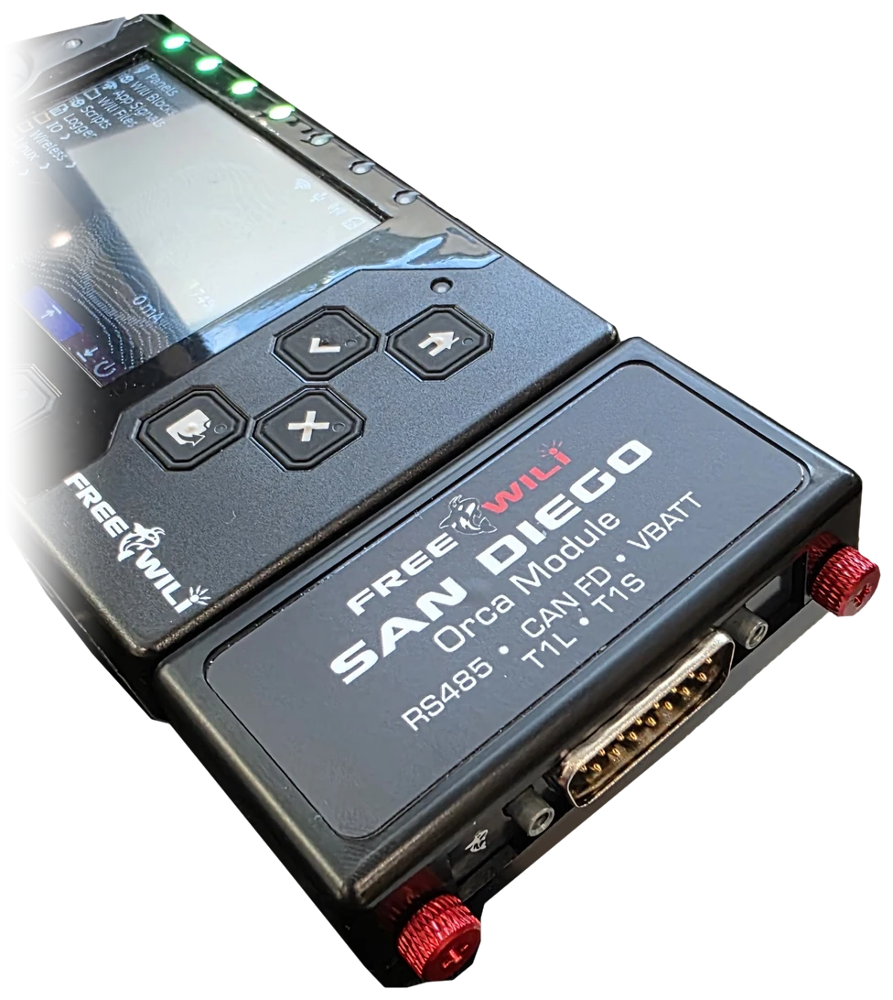
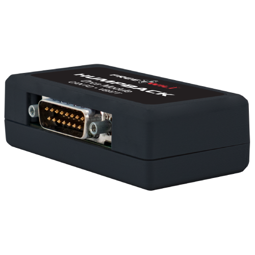
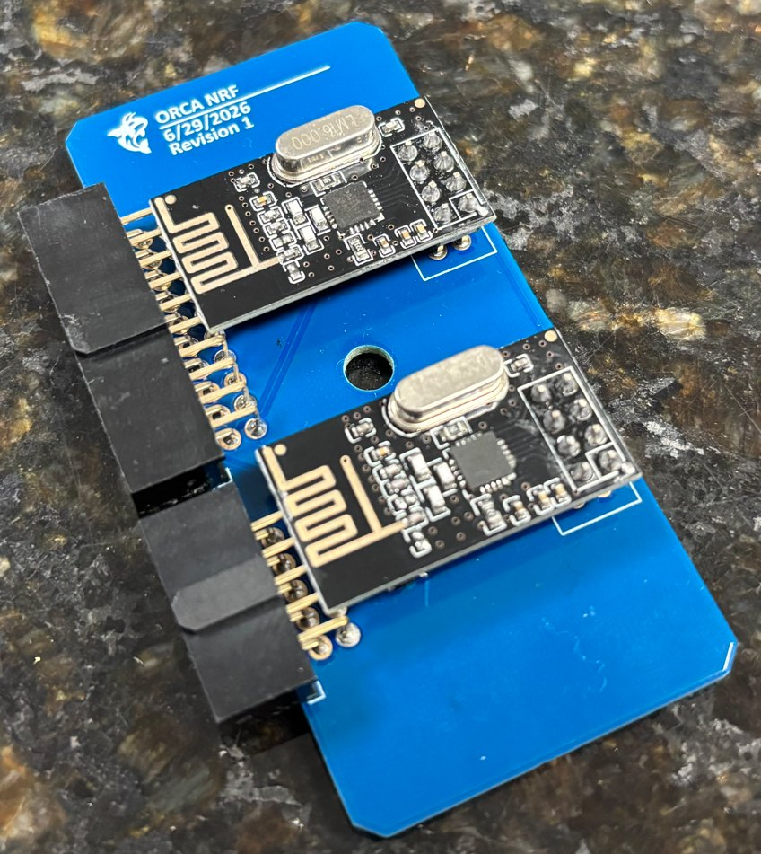
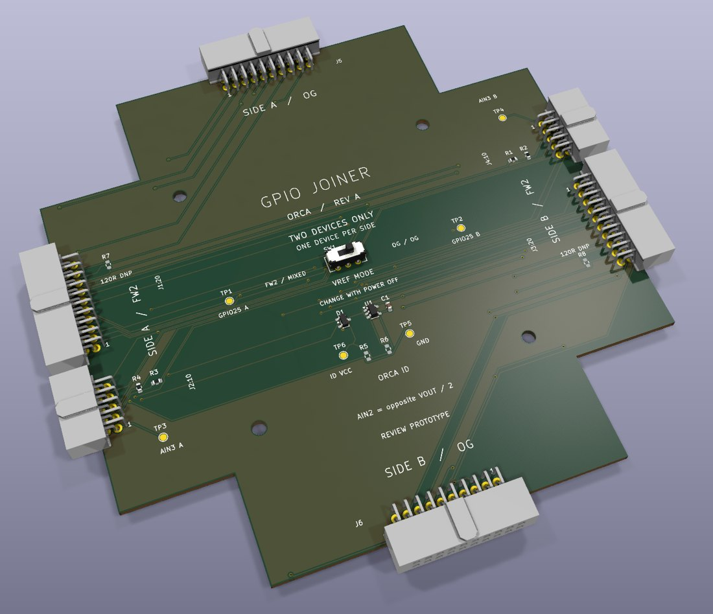

Field networks
SAN DIEGO Orca
Adds RS485 and 10BASE-T1L/T1S Ethernet, and brings FREE-WILi 2's CAN and CAN FD to the same DB-15.
Orcas are expansion modules for FREE-WILi 2, and an Orca can be anything. A network interface, a radio, a sensor front end, or a board nobody has thought of yet. Each one adds the connector and circuit for a different job, while the handheld, its touchscreen and your scripts stay the same.
A network interface, a radio, a sensor front end, or something nobody has built yet. Whatever it is, it snaps onto the same handheld and turns FREE-WILi 2 into the tool for that job — in your hand, or from your computer over USB.
FREE-WILi 2 already carries the parts every job needs: a touchscreen, wireless, and scripting. An Orca adds the one part that differs from job to job — the physical connection to the thing in front of you.
So moving from a field bus to a radio link to a sensor of your own means swapping a module, not learning a new tool. You keep the same Python, Rust and C/C++ API and the same touchscreen workflow.
A module resting on header-pin friction is fine on a desk and a liability once the tool is moving in your hand. Orcas use a rigid mounting system that holds the module in place without flex or intermittent connections.
An Orca carries its own connector for the job — the network Orcas, for example, use a rugged DB-15 — so the harness is one secure connection in the lab, on the shop floor or in the field — and the logging, the live display and the test sequence can run on the device in your hand. Plug in USB and the same tool works from your computer too.
Three things happen when an Orca goes on, and none of them is a setup screen.
The connector gives a module power, digital buses, CAN FD and analog I/O. What it does with them is open. Here are two you can buy, one a builder made from the template, and the one that matters most: yours.

Adds RS485 and 10BASE-T1L/T1S Ethernet, and brings FREE-WILi 2's CAN and CAN FD to the same DB-15.

The CAN-only version of SAN DIEGO Orca: CAN and CAN FD on a DB-15, with the optional DC V+ power and charging input.

A radio-carrier Orca built from the template. Its KiCad project is in the repository to open and copy from.
About 90% of the device already exists. Build the last 10% from the open templates, by hand or with an AI agent.
| If you need to connect to | Choose | Why |
|---|---|---|
| Modbus or other RS485 devices, or single-pair Ethernet | SAN DIEGO Orca | RS485, 10BASE-T1L and 10BASE-T1S, plus CAN and CAN FD, on one DB-15 |
| CAN or CAN FD, and nothing else | Humpback Orca | The same CAN and power connections without the RS485 and Ethernet circuitry |
| Something nobody makes | Your own Orca | The handheld is the finished 90%; the open templates start you on the rest |
Most of any custom instrument is the same every time: a processor, a screen, a battery, radios, storage, a case, and the software to drive them. FREE-WILi 2 is that part, finished. Your Orca is the 10% that is left — the connector and circuit for your signal — and the open template repository gives you a head start on that too. Build it by hand or with an AI agent.
freewili/fw2-orca-templates is public. Clone it and you start from a board that already fits, instead of from a blank sheet and a pair of calipers.
ORCATemplate: a starter project with both Orca connector symbols (CN1 20-pin, CN2 10-pin), a 3D STEP model and the EEPROM footprint library.PINOUTS.md: every pin of the 20- and 10-position connectors, for FREE-WILi 2 and the original FREE-WILi.ORCA_NRF: a complete radio-carrier Orca made from the template, assembled and photographed.gpiojoiner: a board that has been built, with its Gerbers, BOM, placement files and the answers for a PCB assembly quote.AGENTS.md: the Orca workflow written for AI coding agents.ORCATemplate in KiCad. The connectors, their positions and the ID EEPROM footprint are already there.PINOUTS.md to pick the signals you need.Because the template, the pinouts and two worked examples are plain files in one repository, an AI coding agent has what it needs to draft an Orca with you. AGENTS.md tells it how:
Prefer to do it yourself? It is an ordinary KiCad project. Nothing in the flow requires AI.

Good to know before you start: the template's footprint library table points at paths from another machine, so repoint those libraries on a fresh checkout. The repository includes the ID EEPROM hardware but not yet the identification contents or programming procedure — ask on Discord, where you can also ask for an Altium template.
An Orca can be anything; this is just one that exists today. SAN DIEGO Orca is built for field networks: it brings RS485, CAN, CAN FD and single-pair Ethernet to FREE-WILi 2 on one connector, so you can sniff, script, simulate and stress-test them.
The result: log Modbus and CAN traffic to scripts, bridge it over WiFi, display live bus data on-screen, and automate full test sequences, on its own or from your computer over USB. Full SAN DIEGO Orca specifications, pinout table and wiring →
* DEF CON FREE-WILi 2 edition: the DC V+ power input does not function.
See every Orca, with specifications, pinouts and wiring, and pick the one that matches the job in front of you — or build the one nobody makes.